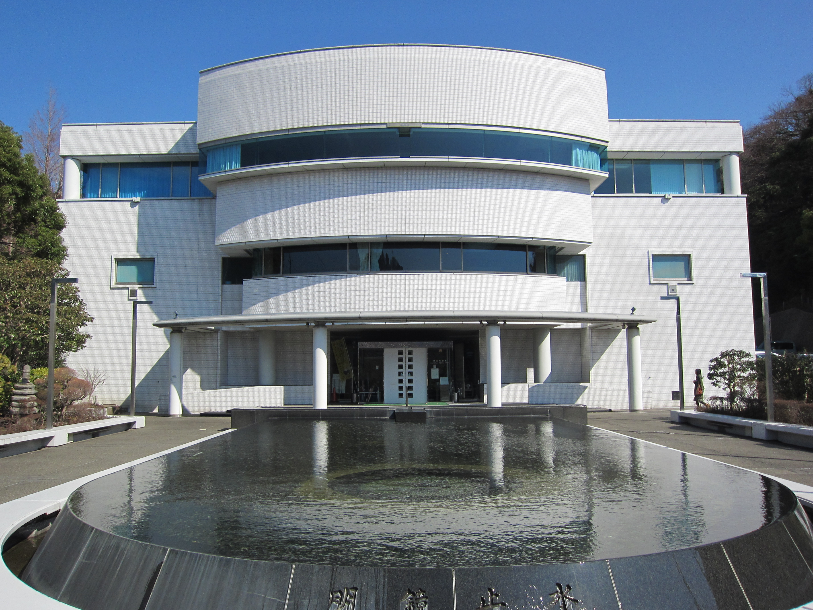

わかりやすく開かれた行政へ

葉山町が2026年9月に公表した2025年度決算概要では、一般会計の歳出は約137億円 です[1]。私は、町のお金について、金額の 大きさだけでなく、何のために使い、暮らしがどう変わったのかを分かりやすく伝えることを 大切にしたいと考えています。
新しい事業や施設を検討する際には、導入・建設時の費用だけでなく、その後の運営、人員、 点検、修繕、更新まで見通します。「つくれるか」だけでなく、「使いやすい状態で続けられ るか」を、町民の皆さんと確認できる行政を目指します。
町の公表資料では、2024年度に採択された「書かない窓口化事業」の事業費は1,888万 3,000円です。申請書の作成支援や窓口案内、証明書の交付を通じて、手続きの負担 軽減を目指す取り組みが進められています[2]。
私は、こうした取り組みを「システムを導入した」で終わらせず、窓口で待つ時間、手続きが 終わるまでの時間、同じ内容を書き直す負担などが、実際にどれだけ減ったかを確認したいと 考えています。
町のホームページも、必要な情報を掲載するだけでなく、「自分は何をすればよいか」「どこに 相談すればよいか」が分かる案内を目指します。スマートフォンやパソコンを使わない方にも、 電話や窓口で同じように情報と支援が届くことを大切にします。
南郷上ノ山公園には6面のテニスコートなどがあり、施設の休日は原則として 月曜日に設定されています。利用日を広げることについては、利用希望、施設の点検や整備、 必要な人員と費用を確認し、地域団体などとの連携も含めて検討することを提案します [3]。
体育館などについては、普段のスポーツや文化活動と、災害時の避難生活の両方に役立つ 使い方を考えます。町の2026年度施政方針には、中学校屋内運動場の空調設備設置に向けた 設計も位置付けられています。こうした既存の計画を踏まえ、空調や通信、電源などの備えを、 施設ごとに確認したいと考えています[4]。
可動式の観客席やパブリックビューイングへの活用なども、利用の見込みと費用を比較しながら 検討します。新しくつくること、今あるものを直すこと、使い方を変えること。その 選択肢を並べて説明できる行政を目指します。
曲田 和史 KAZUFUMI KYOKUTA